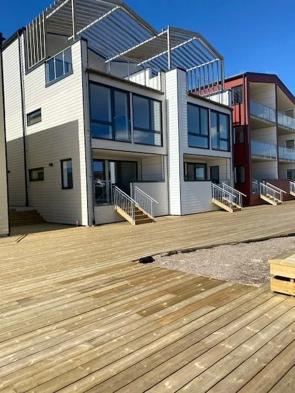
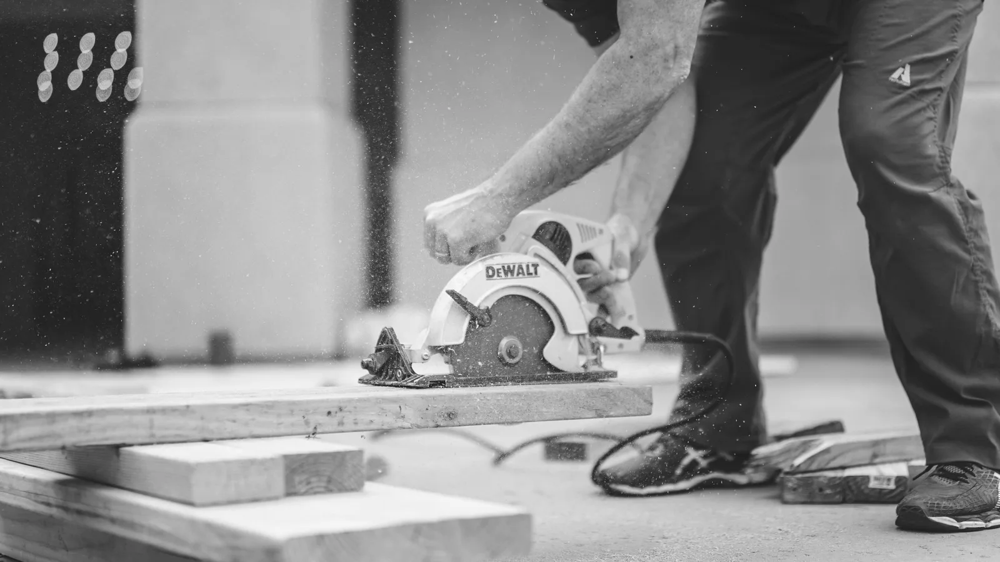
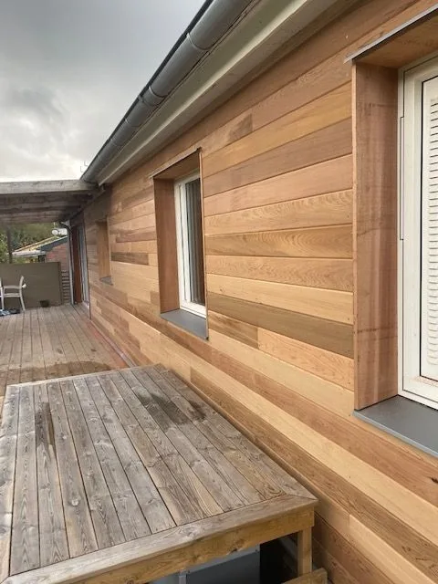
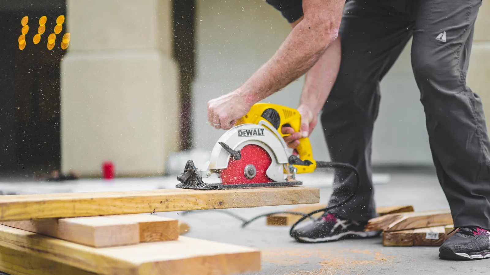

Ditt hem.
Vårt hantverk.
Byggfirma i Stenungsund. Från första idé till nybyggnation, renovering och genomtänkta detaljer.
Stenungsund med omnejdGrundat av Jim Källén 2018Helhetslösningar inom bygg
Det ska kännas rätt.
Hela vägen hem.
Ett hus är mer än väggar och tak. Det är platsen där vardagen händer.
Vi på JK Bygg förverkligar dina önskemål med noggrannhet och känsla för detaljer. Från mindre snickeriarbeten till större byggprojekt, alltid med utgångspunkt i ditt hem.
Lär känna JK ByggPlats för dina idéer.
Bygga nytt, bygga ut eller ta hand om det som redan finns. Vi hjälper dig med helheten.

Trä, omsorg och noggrant utförda detaljer.
Nybyggnation & tillbyggnad
Mer plats för livet.
Renovering & snickeri
Ta vara på det du har.
Badrum
Ett rum att trivas i.
Takbyte
Omsorg om hela huset.
Vi samarbetar med rörläggare, elektriker och plattsättare för att göra byggprojektet enklare för dig.
Hantverket talar
för sig självt.
Se alla referenser 


Din byggare.
Från första samtalet.
Jim Källén startade JK Bygg 2018 efter flera år i byggbranschen. Idag utgår vi från centrala Stenungsund och hjälper kunder i närområdet.
Du har en direkt kontakt för dina frågor. Vi lyssnar på vad du vill göra och samlar den kompetens som ditt projekt behöver.
Lär känna JK ByggEn bra början
är ett samtal.
Du behöver inte ha en färdig plan. Några tankar, en bild eller en ritning räcker för att börja prata.
Ring JimVilka byggarbeten kan ni hjälpa till med?
Vi arbetar med nybyggnation, tillbyggnader, renovering, badrum, kök, fönsterbyte och tak. Bland våra referenser finns även altaner, fasadarbeten och platsbyggd förvaring.
Var arbetar ni?
Vi utgår från centrala Stenungsund och arbetar i Stenungsund med omnejd. Kontakta Jim och berätta var ditt projekt finns.
Kan jag använda ROT-avdrag?
Vissa renoverings- och byggarbeten kan ge rätt till ROT-avdrag. Möjligheten beror på arbetet och dina förutsättningar. Läs aktuella regler hos Skatteverket.
Hur tar jag första kontakten?
Ring 0708-46 87 48 eller mejla j.kallenbygg@gmail.com. Berätta vad du vill göra, var fastigheten ligger och om du har en önskad tidplan. Skicka gärna bilder eller ritningar om du har.
Vad vill du bygga?
Stort eller smått. Berätta om din idé så tar vi det därifrån.